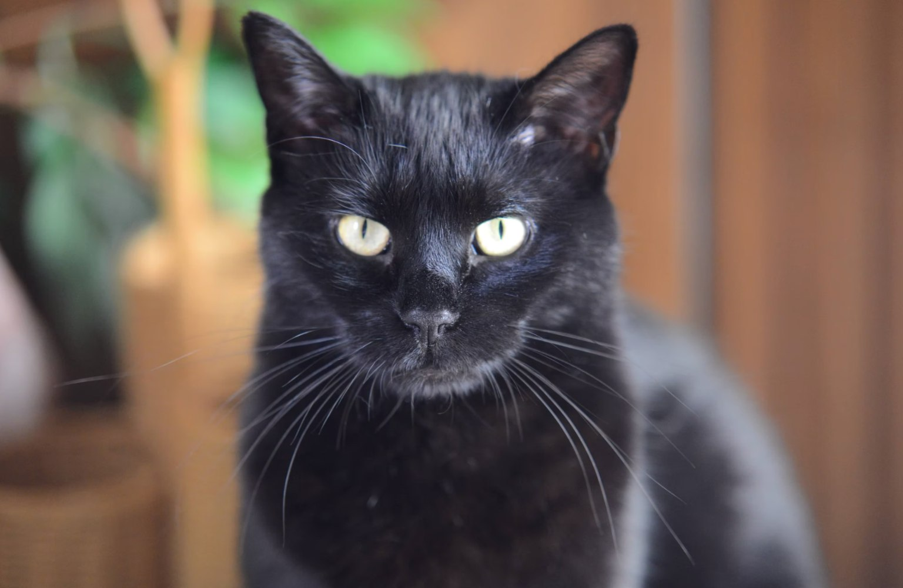

Desde la antigüedad, los gatos negros han sido protagonistas de leyendas y mitos. Se les ha asociado con la magia, tanto buena como mala, dependiendo de la cultura. En la Edad Media, se creía que eran compañeros de brujas, lo que les dio una reputación oscura. Sin embargo, en otras civilizaciones, como la egipcia, los gatos negros eran símbolos de protección y buena suerte. Su aura enigmática ha inspirado tanto temor como admiración.